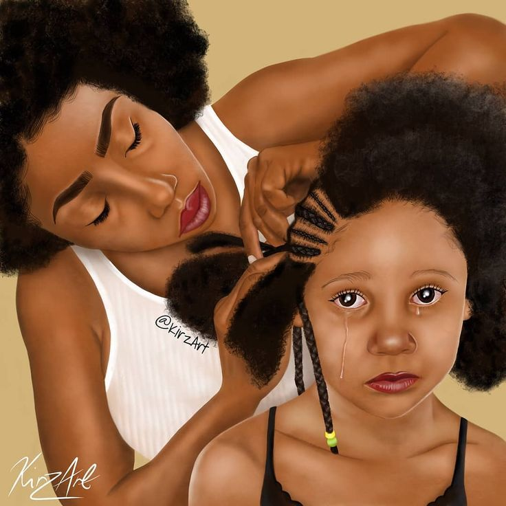
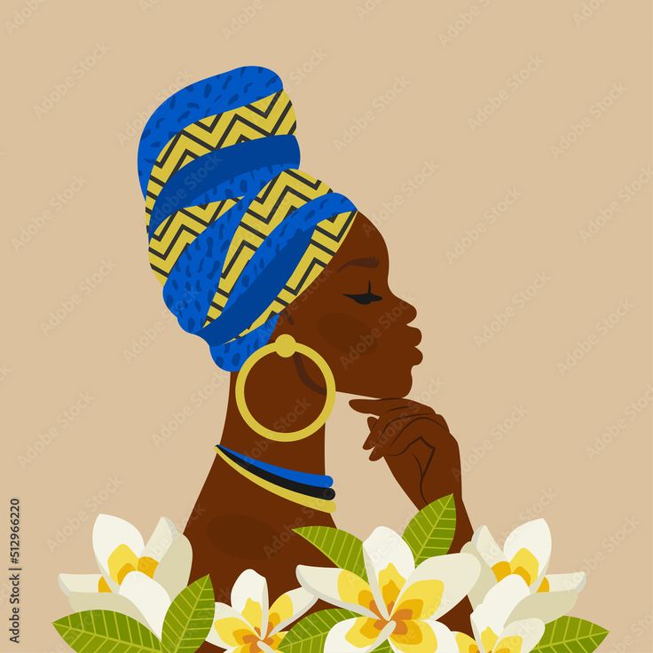
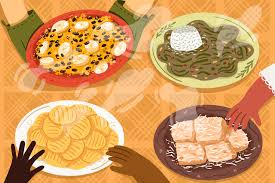

Simbolos ultilizados pela cultura afro-brasileira
Tranças

Elas são um estilo de penteado popular em muitas culturas africanas e foram usadas como uma forma de
expressão cultural, religiosa e social. Diferentes tribos africanas usavam tranças como uma forma de
identificação, com penteados específicos que indicavam idade, status social e posição na comunidade e
quais deuses cultuavam, com o tempo ganhou reconhecimento e ainda hoje carrega um grande significado
para população afro-brasileira
turbante

No Brasil a moda afro trouxe de volta o uso dos turbantes não apenas por sua exótica beleza estética, mas principalmente como forma de resgate de todos os conteúdos desta tradição, assim como as tranças a forma como é ultilizada o turbante pode ter um significado.
comidas

A culinária afro-brasileira tem sua origem com a chegada dos negros escravizados à colônia. Os africanos
escravizados tiveram que recriar seus quitutes com os ingredientes locais, como culinaria
afro-brasileira temos a feijoada, acarjé, angu,Em Minas Gerais, na região do Serro e Diamantina, a
cultura do doce remonta o período colonial. Entre os principais tipos relatados estão rapadura, cocada,
pé de moleque, ambrosia, arroz doce e doces de frutas, onde além dos tradicionais de banana, goiaba,
abóbora, cidra ralada, etc., e também o furrundu